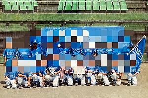
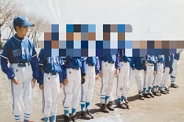
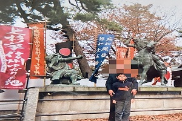

小学校
地元の小学校に入学する。
家から学校まで道のりは約3kmあり、毎日1時間かけて通った。


小学校3年生から少年野球を始め、学年が上がるとキャプテンを任され、
キャプテンとして、チームの統率やモチベーション管理などを行った。
ポジションは、主にピッチャー・サードだった。

祖父の影響で歴史が好きで、歴史の書籍を読み漁ったり、川中島古戦場や
巌流島など歴史的な名所に家族と旅行によく行っていた。